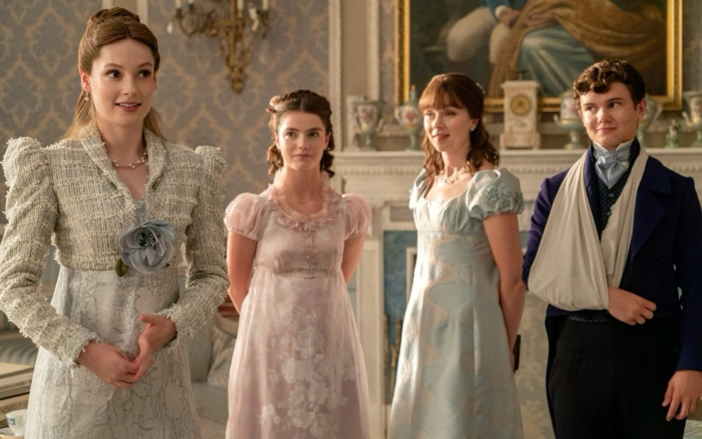

La Serie

El Universo de Bridgerton
Ambientada en la suntuosa, competitiva y alta sociedad del Londres de la Regencia, la serie sigue a los ocho hermanos de la poderosa familia Bridgerton en su búsqueda del amor, la identidad y el estatus.
Desde los ostentosos salones de baile de Mayfair hasta los palacios aristocráticos, cada temporada aborda el romance central de uno de los hermanos, entrelazando el drama, los secretos sociales y las crónicas de la misteriosa Lady Whistledown.
El Contexto Histórico y Estético
Un enfoque contemporáneo del género de época, redefiniendo el drama romántico clásico a través de una paleta de colores vibrante, vestuario detallado y versiones orquestales de música pop moderna.